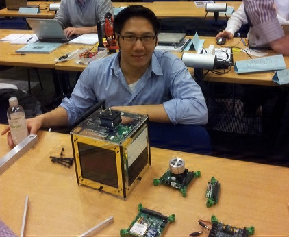

Viet Yen Nguyen
HACKING SOFTWARE, PROBABILITY & DATA
About
I am an engineer specialized in data/AI scaled with concurrency and distributed systems. Currently deep into webcrawling + agents using LangGraph. Recovering formal methods academic, and worked previous in European research projects for aerospace and automotive. Then +10Y in startup. I enjoy most working in small teams. Not shy of taking leadership nor tackling hard/annoying problems.
Email me for further information and opportunities. Happy to network.

Tools
- COMPASS Toolset: Model-based system-level analysis using model checking
- NuSMV: Extended for compositional reasoning using SAT-solving
- Markov Reward Model Checker: Extended with transient analysis using Krylov subspaces
- SPIN: Extended with incremental hashing
- MoonWalker: Software model checker for .NET programs
Publications
Book Chapters
- Joost-Pieter Katoen, Viet Yen Nguyen, Thomas Noll. Formal Validation Methods in Model-Based Spacecraft Systems Engineering. Included in the book "Modeling and Simulation-Based Systems Engineering Handbook". Taylor & Francis, 2014.
Abstract: The size and complexity of software in spacecraft is increasing exponentially and this trend complicates its validation within the context of the overall spacecraft system. Current validation methods are labor-intensive as they rely on manual analysis, review and inspection. That is why we developed - with requirements from the European space industry - a novel modeling language and toolset for a (semi-)automated validation approach. Our modeling language is a dialect of the Architecture Analysis and Design Language (AADL) and enables engineers to express the spacecraft system design, the software design, and their reliability aspects in a single integrated model. The model can subsequently be analyzed by the COMPASS toolset. This toolset utilizes state-of-the-art model checking techniques, both qualitative and probabilistic, for checking requirements related to functional correctness, safety & dependability and performance. Several studies using satellite design data have been performed by industry. We report on them in this chapter. The formal nature of our approach enables engineers to identify, evaluate and address intricate strengths and weaknesses in the system software architecture through rigorous and automated methods. Our experience report on these methods with our satellite cases can be used to kickstart future formal model-based validation efforts.
Journal Articles
- Marco Bozzano, Alessandro Cimatti, Joost-Pieter Katoen, Panagiotis Katsaros, Konstantinos Mokos, Viet Yen Nguyen, Thomas Noll, Bart Postma, Marco Roveri. Spacecraft Early Design Validation Using Formal Methods. Journal on Reliability Engineering and System Safety (RESS), pages 337-362, Volume 132. Elsevier, 2014.
Abstract: The size and complexity of software in spacecraft is increasing exponentially, and this trend complicates its validation within the context of the overall spacecraft system. Current validation methods are labor-intensive as they rely on manual analysis, review and inspection. For future space missions, we developed - with challenging requirements from the European space industry - a novel modeling language and toolset for a (semi-)automated validation approach. Our modeling language is a dialect of AADL and enables engineers to express the system, the software, and their reliability aspects. The COMPASS toolset utilizes state-of-the-art model checking techniques, both qualitative and probabilistic, for the analysis of requirements related to functional correctness, safety, dependability and performance. Several pilot projects have been performed by industry, with two of them having focused on the system-level of a satellite platform in development. Our efforts resulted in a significant advancement of validating spacecraft designs from several perspectives, using a single integrated system model. The associated technology readiness level increased from level 1 (basic concepts and ideas) to early level 4 (laboratory-tested).
- Viet Yen Nguyen, Theo C. Ruys. Selected Dynamic Issues in Software Model Checking. International Journal on Software Tools for Technology Transfer (STTT), pages 337-362, Volume 15, Issue 4, Springer, 2013.
Abstract: Software model checking has come of age. After one and a half decade, several successful model checking tools have emerged. One of the most prominent approaches is the virtual machine-based approach, pioneered by Java PathFinder (jpf). And although the virtual machine-based approach has been rather successful, it lags behind classic model checking in terms of speed and memory consumption. Fortunately, with respect to the implementation of virtual-based model checkers, there is still ample room for innovation and optimizations. This paper presents three novel (optimization) techniques that have been implemented into MoonWalker, a software model checker for .Net programs. (a) .Net specifies an exception handling mechanism called structured exception handling (seh). seh is one of the most sophisticated and fine-grained exception handling mechanisms for application platforms. Its implementation within MoonWalker is the most sophisticated in a model checker to date. (b) To decrease memory use within MoonWalker, a collapsing scheme has been developed for collapsing the metadata used by stateful dynamic partial order reduction. The reduction of memory is in some cases more than a factor of two. (c) Finally, to decrease the verification time, the memoised garbage collection (mgc) algorithm has been developed. It has a lower time-complexity than the often used Mark & Sweep garbage collector. Its main idea is that it only traverses changed parts of the heap instead of the full heap. The average time reduction is up to 25%. We have used the Java Grande Forum benchmark suite to compare MoonWalker against jpf and observed that the average performance of MoonWalker is on par with jpf.
- Marco Bozzano, Alessandro Cimatti, Joost-Pieter Katoen, Viet Yen Nguyen, Thomas Noll, Marco Roveri. Safety, Dependability, and Performance Analysis of Extended AADL Models. The Computer Journal, pages 754-775, Volume 54, Issue 5, 2011.
Abstract: This paper presents a component-based modelling approach to system-software co-engineering of real-time embedded systems, in particular aerospace systems. Our method is centred around the standardized Architecture Analysis and Design Language (AADL) modelling framework. We formalize a significant subset of AADL, incorporating its recent Error Model Annex for modelling faults and repairs. The major distinguishing aspects of this component-based approach are the possibility to describe nominal hardware and software operations, hybrid (and timing) aspects, as well as probabilistic faults and their propagation and recovery. Moreover, it supports dynamic (i.e. on-the-fly) reconfiguration of components and inter-component connections. The operational semantics gives a precise interpretation of specifications by providing a mapping onto networks of event-data automata. These networks are then subject to different kinds of formal analysis such as model checking, safety and dependability analysis and performance evaluation. Mature tool support realizes these analyses. The activities reported in this paper are carried out in the context of the correctness, modelling, and performance of aerospace systems, project which is funded by the European Space Agency.
Magazine Publications
- Tiago Amorim, Daniel Schneider, Viet Yen Nguyen, Christoph Schmittner and Erwin Schoitsch. Five Major Reasons Why Safety and Security Haven't Married (Yet). To be published in ERCIM 2015
Cyber-Physical Systems (CPS) offer tremendous promise. Yet their breakthrough is stifled by deeply-rooted challenges to assuring their combined safety and security. We present five major reasons why established engineering approaches need to be rethought.
All relevant safety standards assume that a system.s usage context is completely known and understood at development time. This assumption is no longer true for Cyber-Physical Systems (CPS). Their ability to dynamically integrate with third-party systems and to adapt themselves to changing environments as evolving systems of systems (CPSoS) is a headache for safety engineers in terms of greater unknowns and uncertainties. Also, a whole new dimension of security concerns arises as CPS are becoming increasingly open, meaning that their security vulnerabilities could be faults leading to life-endangering safety hazards.
Despite this, there are no established safety and security co-engineering methodologies (or even standardization). In fact, their respective research communities have traditionally evolved in a disjointed fashion owing to their different roots: namely embedded systems and information systems. With CPSoS, this separation can no longer be upheld. There are five major hurdles to a healthy safety-security co-engineering practice. The EMC2 project investigates how these may be overcome.
- Joost-Pieter Katoen, Viet Yen Nguyen. Ruimtevaartsoftware Ideale Proeftuin voor Formele Methoden. Bits and Chips, December 2012
Het ESA-project Compass beoogt een geintegreerde, coherente aanpak te
ontwikkelen voor het ontwerp en de analyse van ruimtevaartsoftware. In dit
artikel geven de betrokken onderzoekers van de RWTH Aachen een impressie van
de gekozen benadering en de resultaten.
Conference Publications
- Viet Yen Nguyen, Andréa B. Duque, Jules Belveze, Lukas D. Baker, Astrid Harsaae, Pedro Pessoa, Inês Oliveira. Atlastic Reputation AI: Four Years of Advancing and Applying a SOTA NLP Classifier. In: Proceedings of the 8th IEEE International Conference on Data Science and Advanced Analytics (DSAA) pages 1-2, IEEE, 2021.
We report on the main challenges we had to overcome while bootstrapping, commercializing and scaling our automated sentiment analysis solution in the media intelligence industry. Over the span of four years, our solution evolved from a run-of-the-mill component to a bespoke in-house bred flagship feature that, to our knowledge, trumps those of our industry peers. From all the learnings to date, the most significant one has been shifting our data labeling efforts from a third party to a completely in-house controlled process — a move that brought us noticeable improvements in inferencing quality.}
- Viet Yen Nguyen, Benjamin Bittner, Joost-Pieter Katoen and Thomas Noll. Compositional Analysis Using Component-Oriented Interpolation. In: Proceedings of the 11th International Symposium on Formal Aspects of Component Software (FACS) pages 68-85, Volume 8997 of LNCS, Springer.
Recipient of the EASST Best Paper Award
We present a novel abstraction technique that exploits the compositionality of a concurrent system consisting of interacting components. It uses, given an invariant and a component of interest, bounded model checking (BMC) to quickly interpolate an abstraction of that component's environment. The abstraction may be refined by increasing the BMC bound. Furthermore, it is only defined over variables shared between the component and its environment, resulting in an aggressive abstraction with several applications. We demonstrate its use in a verification setting, as we report on our open source implementation in the NuSMV model checker which was used to perform a practical assessment with industrially-sized models from satellite case studies of ongoing missions. These models are expressed in a formalized dialect of the component-oriented and industrially standardized Architecture Analysis and Design Language (AADL).
- Dimitri Bohlender, Harold Bruintjes, Sebastian Junges, Jens Katelaan, Viet Yen Nguyen, Thomas Noll. A Review Of Statistical Model Checking Pitfalls on Real-Time Stochastic Models. In: Proceedings of the 6th International Symposium of Leveraging Applications of Formal Methods, Verification and Validation (ISOLA) pages 177-192, Volume 8803 of LNCS, Springer.
Statistical model checking (SMC) is a technique inspired by Monte-Carlo simulation for verifying time-bounded temporal logical properties. SMC originally focused on fully stochastic models such as Markov chains, but its scope has recently been extended to cover formalisms that mix functional real-time aspects, concurrency and non-determinism. We show by various examples using the tools UPAAL and MODES that combining the stochastic interpretation of such models with SMC algorithms is extremely subtle. This may yield significant discrepancies in the analysis results. As these subtleties are not so obvious to the end-user, we present five semantic caveats and give a classification scheme for SMC algorithms. We argue that caution is needed and believe that the caveats and classification scheme in this paper serve as a guiding reference for thoroughly understanding them.
- Bernhard Ern, Viet Yen Nguyen, Thomas Noll. Characterization of Failure Effects on AADL Models. In: Proceedings of the 32nd International Conference on Computer Safety, Reliability and Security (SAFECOMP) pages 241-252, Volume 8153 of LNCS, Springer, 2013.
Abstract: Prior works on model-based Failure Modes and Effects Analysis (FMEA) automatically generate a FMEA table given the system model, a set of failure modes, and a set of possible effects. The last requirement is critical as bias may occur: since the considered failure effects are restricted to the anticipated ones, unexpected effects - the most interesting ones - are disregarded in the FMEA.
In this paper, we propose and investigate formal concepts that aim to overcome this bias. They support the construction of FMEA tables solely based on the system model and the failure modes, i.e., without requiring the set of effects as input. More concretely, given a system specification in the Architecture Analysis and Design Language (AADL), we show how to derive relations that characterize the effects of failures based on the state transition system of that specification. We also demonstrate the benefits and limitations of these concepts on a satellite case study.
- Marie-Aude Esteve, Joost-Pieter Katoen, Viet Yen Nguyen, Bart Postma, Yuri Yushtein. Formal Correctness, Safety, Dependability and Performance Analysis of a Satellite. In: Proceedings of the 34th International Conference on Software Engineering (ICSE) pages 1022-1031, IEEE, 2012.
Abstract: This paper reports on the usage of a broad palette of formal modeling and analysis techniques on a regular industrial-size design of an ultra-modern satellite platform. These efforts were carried out in parallel with the conventional software development of the satellite platform. The model itself is expressed in a formalized dialect of AADL. Its formal nature enables rigorous and automated analysis, for which the recently developed COMPASS toolset was used. The whole effort revealed numerous inconsistencies in the early design documents, and the use of formal analyses provided additional insight on discrete system behavior (comprising nearly 50 million states), on hybrid system behavior involving discrete and continuous variables, and enabled the automated generation of large fault trees (66 nodes) for safety analysis that typically are constructed by hand. The model's size pushed the computational tractability of the algorithms underlying the formal analyses, and revealed bottlenecks for future theoretical research. Additionally, the effort led to newly learned practices from which subsequent formal modeling and analysis efforts shall benefit, especially when they are injected in the conventional software development lifecycle. The case demonstrates the feasibility of fully capturing a system-level design as a single comprehensive formal model and analyze it automatically using a toolset based on (probabilistic) model checkers.
- Yuri Yushtein, Marco Bozzano, Alessandro Cimatti, Joost-Pieter Katoen, Viet Yen Nguyen, Thomas Noll, Xavier Olive, Marco Roveri. System-Software Co-Engineering: Dependability and Safety Perspective. In: Proceedings of the 4th IEEE International Conference on Space Mission Challenges in Information Technology (SMC-IT) pages 18-25, IEEE, 2011.
Abstract: The need for an integrated system-software co-engineering framework to support the design of modern space systems is pressing. The current tools and formalisms tend to be tailored to specific analysis techniques and are not amenable for the full spectrum of required system aspects such as safety, dependability and performability. Additionally, they cannot handle the intertwining of hardware and software interaction. As such, the current practices lack integration and coherence. We recently developed a coherent and multidisciplinary approach towards developing space systems at architectural design level, linking all of the aforementioned aspects, and assessed it with several industrial evaluations. This paper reports on the approach, the evaluations and our perspective on current and future developments.
- Maximilian R. Odenbrett, Viet Yen Nguyen, Thomas Noll. Slicing AADL Specifications for Model Checking. In: Proceedings of the 2nd NASA Formal Methods Symposium (NFM) pages 217-221, Volume of NASA Conference Proceedings, 2010.
Abstract: To combat the state-space explosion problem in model checking larger systems, abstraction techniques can be employed. Here, methods that operate on the system specification before constructing its state space are preferable to those that try to minimize the resulting transition system as they generally reduce peak memory requirements. We sketch a slicing algorithm for system specifications written in (a variant of) the Architecture Analysis and Design Language (AADL). Given a specification and a property to be verified, it automatically removes those parts of the specification that are irrelevant for model checking the property, thus reducing the size of the corresponding transition system. The applicability and effectiveness of our approach is demonstrated by analyzing the state-space reduction for an example, employing a translator from AADL to Promela, the input language of the SPIN model checker.
- Marco Bozzano, Roberto Cavada, Alessandro Cimatti, Joost-Pieter Katoen, Viet Yen Nguyen, Thomas Noll, Xavier Olive. Formal Verification and Validation of AADL Models. In: Proceedings of Embedded Real Time Software and Systems Conference (ERTSS), 2010.
Introduction: Safety-critical systems are increasingly difficult to comprehend due to their rising complexity. Methodologies, tools and modeling formalisms have been developed to overcome this. Component-based design is an important paradigm that is shared by many of them. It helps to master the overall complexity while in addition allowing for reusability. Furthermore, it easily supports the common issues in the engineering disciplines, like hardware/software (i.e., co-engineering), performability, dependability, reliability, availability, maintainability and safety engineering (RAMS). Model artifacts that are typical for a discipline can be encapsulated in the affected components, while staying imperceptible for non-affected components. This leads to different views of the system under development, which subsequently entails the natural distinction in different system abstractions, formalisms and tools. Nonetheless, there is only one system under development. With the current methodologies, there is no single view of this system that links all aspects relevant to all involved engineering disciplines in a coherent manner.
- Marco Bozzano, Alessandro Cimatti, Joost-Pieter Katoen, Viet Yen Nguyen, Thomas Noll, Marco Roveri, Ralf Wimmer. A Model Checker for AADL. In: Proceedings of 22nd International Conference on Computer Aided Verification (CAV) pages 562-565, Volume 6174 of LNCS, Springer, 2010.
Abstract: We present a graphical toolset for verifying AADL models, which are gaining widespread acceptance in aerospace, automobile and avionics industries for comprehensively specifying safety-critical systems by capturing functional, probabilistic and hybrid aspects. Analyses are implemented on top of mature model checking tools and range from requirements validation to functional verification, safety assessment via automatic derivation of FMEA tables and dynamic fault trees, to performability evaluation, and diagnosability analysis. The toolset is currently being applied to several case studies by a major industrial developer of aerospace systems.
- Falko Dulat, Joost-Pieter Katoen, Viet Yen Nguyen. Model Checking Markov Chains using Krylov Subspace Methods: An Experience Report. In: Proceedings of 7th European Performance Engineering Workshop (EPEW) pages 115-130, Volume 6342 of LNCS, Springer, 2010.
Abstract: The predominant technique for computing the transient distribution of a Continuous Time Markov Chain (CTMC) exploits uniformization, which is known to be stable and efficient for non-stiff to mildly-stiff CTMCs. On stiff CTMCs however, uniformization suffers from severe performance degradation. In this paper, we report on our observations and analysis of an alternative technique using Krylov subspaces. We implemented a Krylov-based extension to MRMC (Markov Reward Model Checker) and conducted extensive experiments on five case studies from different application domains. The results reveal that the Krylov-based technique is an order of magnitude faster on stiff CTMCs.
- Marco Bozzano, Alessandro Cimatti, Marco Roveri, Joost-Pieter Katoen, Viet Yen Nguyen, Thomas Noll. Codesign of Dependable Systems: A Component-Based Modeling Language. In: Proceedings 7th ACM-IEEE International Conference on Formal Methods and Models for Codesign (MEMOCODE) pages 121-130, IEEE, 2009.
Abstract: This paper presents a model-based approach to system-software co-engineering which is focused on aerospace systems but is relevant to a much wider class of dependable systems. We present the main ingredients of the SLIM modeling language and give a precise interpretation of SLIM models by providing a formal semantics using networks of event-data automata. The major distinguishing aspects of this component-based approach are the possibility to describe nominal hardware and software operations, hybrid (and timing) aspects, as well as probabilistic faults and their propagation and recovery. As our approach bears strong resemblance to the standardized AADL (Architecture Analysis and Design Language), a secondary contribution of this paper is a formal semantics of a large fragment of AADL including its Error Model Annex.
- Viet Yen Nguyen, Theo C. Ruys. Memoised Garbage Collection for Software Model Checking. In: Proceedings of the 15th International Conference on Tools and Algorithms for the Construction and Analysis of Systems (TACAS) pages 201-214, Volume 5505 of LNCS, Springer, 2009.
Abstract: Virtual machine based software model checkers like jpf and MoonWalker spend up to half of their verification time on garbage collection. This is no surprise as after nearly each transition the heap has to be cleaned from garbage. To improve this, this paper presents the Memoised Garbage Collection (MGC) algorithm, which exploits the (typical) locality of transitions to incrementally perform garbage collection. MGC tracks the depths of objects efficiently and only purges objects whose depths have become infinite, hence unreachable. MGC was experimentally evaluated via an implementation in our model checker MoonWalker and benchmarks using the parallel Java Grande Forum benchmark suite. By using MGC, a performance increase up to 78% was measured over the traditional Mark&Sweep implementation.
- Niels H.M. Aan de Brugh, Viet Yen Nguyen, Theo C. Ruys. MoonWalker: Verification of .NET Programs. In: Proceedings of the 15th International Conference on Tools and Algorithms for the Construction and Analysis of Systems (TACAS) pages 170-173, Volume 5505 of LNCS, Springer, 2009.
Abstract: MoonWalker is a software model checker for cil bytecode programs, which is able to detect deadlocks and assertion violations in cil assemblies, better known as Microsoft .NET programs. The design of MoonWalker is inspired by the Java PathFinder (jpf), a model checker for Java programs. The performance of MoonWalker is on par with jpf. This paper presents the new version of MoonWalker and discusses its most important features.
- Marco Bozzano, Alessandro Cimatti, Joost-Pieter Katoen, Viet Yen Nguyen, Thomas Noll, Marco Roveri. The COMPASS Approach: Correctness, Modelling and Performability of Aerospace Systems. In: Proceedings of the 28th International Conference on Computer Safety, Reliability and Security (SAFECOMP) pages 173-186, Volume 5775 of LNCS, Springer, 2009.
Abstract: We report on a model-based approach to system-software co-engineering which is tailored to the specific characteristics of critical on-board systems for the aerospace domain. The approach is supported by a System-Level Integrated Modeling (SLIM) Language by which engineers are provided with convenient ways to describe nominal hardware and software operation, (probabilistic) faults and their propagation, error recovery, and degraded modes of operation.
Correctness properties, safety guarantees, and performance and dependability requirements are given using property patterns which act as parameterized “templates” to the engineers and thus offer a comprehensible and easy-to-use framework for requirement specification. Instantiated properties are checked on the SLIM specification using state-of-the-art formal analysis techniques such as bounded SAT-based and symbolic model checking, and probabilistic variants thereof. The precise nature of these techniques together with the formal SLIM semantics yield a trustworthy modeling and analysis framework for system and software engineers supporting, among others, automated derivation of dynamic (i.e., randomly timed) fault trees, FMEA tables, assessment of FDIR, and automated derivation of observability requirements.
- Marco Bozzano, Alessandro Cimatti, Joost-Pieter Katoen, Viet Yen Nguyen, Thomas Noll, Marco Roveri. Verification and Performance Evaluation of AADL Models (Tool Demonstration). In: Proceedings of the 7th Joint Meeting of European Software Engineering Conference and ACM SIGSOFT Symposium on the Foundations of Software Engineering (ESEC/FSE) pages 285-286, ACM, 2009.
Abstract: This paper reports on a model-based approach to system-software co-engineering which is tailored to critical on-board systems for the aerospace domain but is relevant to a much wider class of dependable systems. Our main contribution is a formal semantics for a greater part of standardised AADL, the Architecture Analysis and Design Language, and its Error Model Annex. It covers nominal and degraded hardware/software operations, hybrid (and timing) aspects as well as probabilistic faults, their propagation and recovery. The accompanying software toolset employs SAT-based and symbolic model checking techniques and probabilistic variants thereof. The precise nature of these techniques together with the formal semantics provide a trustworthy modelling and analysis framework to support, among others, assessment of functional correctness, evaluation of performance measures and automated derivation of dynamic fault trees, FMEA tables and observability requirements.
- Marco Bozzano, Alessandro Cimatti, Joost-Pieter Katoen, Viet Yen Nguyen, Thomas Noll, Marco Roveri. Model-Based Codesign of Critical Embedded Systems. In: Proceedings of the 2nd International Workshop on Model Based Architecting and Construction of Embedded Systems (ACES-MB) pages 87-91, Volume 507 of CEUR Workshop Proceedings, 2009.
Abstract: We present a comprehensive methodology for the specification and
analysis of critical embedded systems. The methodology is based on an
architectural design language that enables modeling of both software
and hardware components, timed and hybrid behavior, faulty behavior
and degraded modes of operation, error propagation and recovery. The
methodology is supported by an integrated platform, implemented on top
of state-of-the-art tools, that provides verification capabilities
ranging from requirements analysis to functional verification, safety
assessment, performability evaluation, diagnosis and diagnosability.
- Viet Yen Nguyen, Theo C. Ruys. Incremental Hashing for SPIN. In: Proceedings of the 15th International SPIN Workshop on Model Checking Software pages 232-249, Volume 5156 of LNCS, Springer, 2008.
Abstract: This paper discusses a generalised incremental hashing scheme for explicit state model checkers. The hashing scheme has been implemented into the model checker Spin. The incremental hashing scheme works for Spin’s exhaustive and both approximate verification modes: bitstate hashing and hash compaction. An implementation is provided for 32-bit and 64-bit architectures.
We performed extensive experiments on the BEEM benchmarks to compare the incremental hash functions against Spin’s traditional hash functions. In almost all cases, incremental hashing is faster than traditional hashing. The amount of performance gain depends on several factors, though.
We conclude that incremental hashing performs best for the (64-bits) Spin’s bitstate hashing mode, on models with large state vectors, and using a verifier, that is optimised by the C compiler.
Dissertations
- Viet Yen Nguyen Trustworthy Spacecraft Design Using Formal Methods. PhD Dissertation, RWTH Aachen University, 2012.
Abstract: Model-based system-software co-engineering is a natural evolution towards meeting the high demands of upcoming deep-space and satellite constellation missions. It advocates better abstractions to cope with the increasing spacecraft complexity, and opens the door for a wide range of formal methods, benefiting from the mathematical rigour and precision they bring. This dissertation provides for both: we applied and evaluated state of the art modelling and analysis techniques based on formal methods to spacecraft engineering, and we developed novel theory that tackle issues encountered in industrial practice. In particular, we formalised a modelling language by the aviation and automotive industry, namely the Architecture Analysis and Design Language (AADL). We show in this dissertation how we rooted it into the theories on discrete, real-timed and hybrid automata, various Markov models and temporal and probabilistic logics. This foundation enabled us to develop a comprehensive analysis toolset with model checkers being the cornerstone. It provides a wide range of analyses in an algorithmic fashion rather than the labour-intensive methods currently employed by the space industry. It can generate simulations, fault trees, failure modes and effects tables, performability curves, diagnosability artefacts and affirmations of correctness exhaustively. Our work has been subjected to extensive evaluation. At the European Space Agency, we applied it to a satellite design of one of the agency’s ongoing missions. This dissertation reports on this case study. The case is currently the largest formal methods study of a satellite architecture reported in literature. The sheer size and complexity of the satellite case study indicated several theoretical problems. To this end, we developed a reasoning theory based on Craig interpolants, that generates compositional abstractions from the model. It helps to understand large models, like the satellite case, more effectively. We furthermore studied the use of Krylov methods for improving the numerical stability of analysing a notorious class of Markov chains, namely, stiff Markov chains. They occur naturally in space systems where failure rates have large disparities. Our controlled experiments show that Krylov methods are superior in such cases.
- Viet Yen Nguyen Optimising Techniques for Model Checkers. Master's Thesis, University of Twente, 2007.
Abstract: The Mono Model Checker (MMC) is a software model checker that can verify whether a .NET program contains assertion violations or deadlocks. Much of its design was inspired by Java PathFinder, a software model checker for Java programs. This thesis is the result of the follow-up Master's project on MMC. The goal during this project was to improve MMC's ability to verify models with larger state spaces.
Enhancements have been added in all areas. For improving MMC's performance, both partial order reduction (POR) using object escape analysis and stateful dynamic POR have been added. These techniques reduce the size of a model's state space, and hence reduce the time and memory needed for its verification. For improving MMC's usefulness, .NET's exception handling has been fully implemented, more instructions have been added for increased .NET compliance and a comprehensive testing framework has been created. The latter employs Microsoft's own .NET virtual machine testing suite and has revealed numerous bugs. For improving MMC's usability, an error tracer has been added. It shows the sequence of instructions leading to the assertion violation or deadlock. This improves the user's understanding of detected errors.
Besides improving MMC with known techniques, during the course of this Master's project, three new techniques were developed that effectively decrease both time and memory needed for verifying a model. To decrease memory use, a collapsing scheme has been developed for collapsing the metadata used by a stateful dynamic POR. The reduction of memory is more than a factor of two. To decrease the verification time, a Memoised Garbage Collector has been developed. It has a lower time-complexity than the often used Mark & Sweep garbage collector. Its main idea is that it only traverses changed parts of the heap instead of the full heap. The average time reduction is between 9% and 26%, depending on the model that is verified. The third technique is called incremental hashing, which also has a lower time-complexity. The key notion in this hashing scheme is that a hashcode of an array is recalculated using the old hashcode and the changes to the array. Though this technique was originally developed for MMC, we implemented in Spin, because the stake of hashing in MMC is near zero. Experiments with the BEEM benchmarks showed up to 20% reduction in time when compared against Jenkins's hash function, which is an often used hash function in model checking due to its good uniformity.
We also benchmarked MMC against JPF and Bandera using the Java Grande Benchmark models. The results indicate that MMC is faster in terms of states per second, but JPF is more effective in reducing the state space. Bandera is on all fronts no match for MMC and JPF, as it is outperformed in every benchmark.
Blog Posts
- Lukas Baker, Andrea Duque, Viet Yen Nguyen. Simplified MLOps with Deep Java Library. AWS Machine Learning Blog, November 2021.
This post goes deeper into our deep learning natural language processing (NLP) based advertisement predictor, how we integrated the predictor into one of our pipelines using Deep Java Library (DJL), and how that change made our architecture simpler and MLOps easier.
- Jules Belveze, Andrea Duque, Viet Yen Nguyen. Scaling-up PyTorch inference: Serving billions of daily NLP inferences with ONNX Runtime. Microsoft Open Source Blog, April 2022.
Scaling inference volume: This post shares how we tackled this problem at Hypefactors to scale our PyTorch transformer-based model to billions of inferences per day using ONNX Runtime.
Program Committees
- SEFM 2018: International Conference on Software Engineering and Formal Methods
- SEFM 2017: International Conference on Software Engineering and Formal Methods
- SEFM 2016: International Conference on Software Engineering and Formal Methods
- MARS 2015: Workshop on Models for Formal Analysis of Real Systems